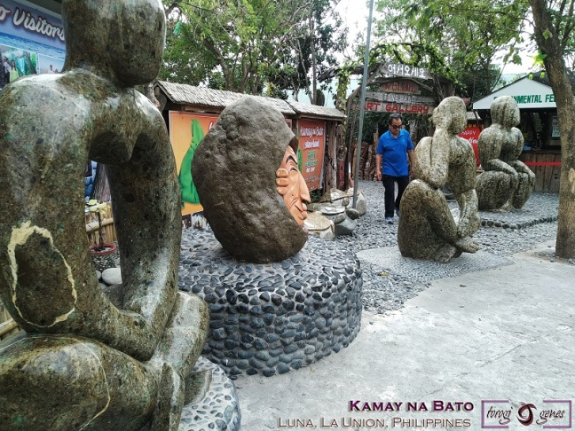
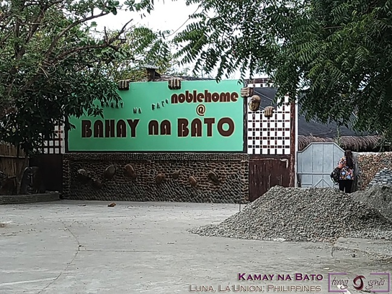
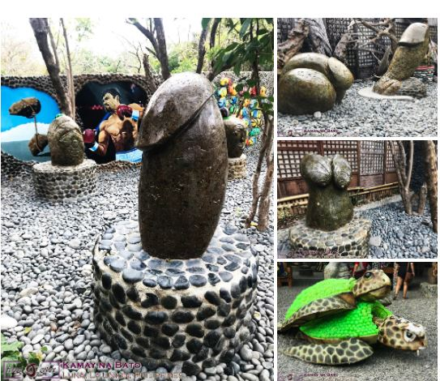

Kamay na Bato Art Gallery
Kamay na Bato Art Gallery is a unique tourist attraction in Luna, La Union which offer an assortment of arts carved from stones.
Situated in the pebble beach (yup, its pebbles guys and not sand) of La Union, Kamay na Bato is drawing a lot of tourists as its predecessor, Bahay na Bato, is now totally closed to the public. The art pieces are carved and assembled by Mr. Vong Kim, originally a Korean national and married to a Luna local, and his students [1]. He graduated in Korea with a degree in fine arts specializing in sculpture. He now resides in Luna with his wife and two kids. Originally, Bahay na Bato, which was built in 2000 and initially intended to be a resthouse for Dr. Edison and Dra. Purita Noble, have been decorated by Mr. Kim with carved stones, antique materials, and wood carvings [2]. It is now closed to the public; fortunately, the Kamay na Bato (Stone Hand) Art Gallery by Mr. Kim is opened and now caters to multitude of tourists. Majority of the art pieces are made of stones and created by Mr. Kim himself. Some of it were carved by his students as he shared his talent to the locals. Wood carvings, paintings, 3D wall decors, and other interesting pieces are also part of the gallery. The following images cannot give full justice to the content of the gallery.
 Above: The phallic items, to the delight of visitors, are still present and also some pieces were added to this category and spread out in the gallery.
In summary, Kamay na Bato (Stone Hand) Art Gallery by Mr. Kim has become a must-see attraction in La Union, complementing other nature-related tourist sites. It is highly recommend as it offers an uncommon gallery content. It would also be good to visit it every couple of years as the gallery content evolves.
Gallery